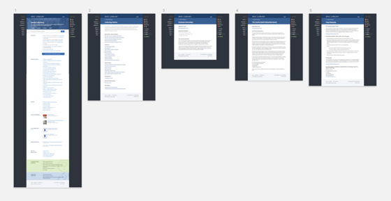

Context
The Special Collections department houses an incredible amount of historically significant items. Their website was old and needed an update. Patrons were reporting that they were unable to find out how to access even the most often-used links and pages on the old site, and the site was not responsive.
I was tasked with creating a new website for the department.
SO YOU’RE AWARE
Any of the 60+ BYU Library web projects—not always UX related—can be added or removed from my project queue at any time based on priority, time contraints, or other reasons.
As project priorities change, a project that only requires 1-8 months of total design and development time often end up spanning up to a year and a half—or more—from start to finish.
Success Metrics
QUANTITATIVE FEEDBACK
Increase the task completion success rate for the following tasks:
- Find the Folklore Forms.
- Find and tell me the where Special Collections is located.
- Find and tell me when Special Collections is open today.
- Find all the results in Finding Aids for The Book of Mormon.
- Tell me the title of the current exhibition going in Special Collections.
- Find the form that will allow you to request a copy of an item from Special Collections.
- Tell me the phone number that you would use to call Special Collections.
1Learn + Understand
I met with the Special Collections despartment as a group and gathered requirements for their new site, and established how we would know whether the new site design was a success.
I also worked with the department to determine which content to keep, toss, and add for the new site.
ACTIVITIES
- Stakeholder/User interviews
- Task analysis
User Roles
- Special Collections patrons
Jobs-to-be-Done: Summary
The following are summaries of the requirements for each user group in the form of a job-to-be-done:
SPECIAL COLLECTIONS PATRONS
When I go to the Special Collections website, I want to access materials I’m assigned to access for class, and find out other relevant information about Special Collections, so I can know how to access materials within—and interact with—Special Collections.
2Design + Testing
Once I had determined requirements and content for the new site, I went straight to designing the site to integrate as a Services page within the main website. Since there was already an existing style guide for Services pages—I skipped wireframe mockups and went straight to high-fidelity mockups.
ACTIVITIES
- Info. architecture creation
- Visual design mockup creation
Workflow Diagramming
Workfow diagramming was determined unnecessary for this project since there were existing design patterns and templates for Services pages.
Wireframing / Prototyping
Again, wireframing was determined unnecessary for this project since there were existing design patterns and templates for Services pages.
High Fidelity Mockups / Prototyping
These mockups were designed to match the exsiting pattern library and templating that existed for Services pages.
Each of the pages included in the mockup represent new page template that would need to be created for the Services pages—all other links from the home page were existing pages or their copy content fit one of the existing or newly created templates.
Once I was done and had reviewed multiple iterations with the stakeholders and the back-end dev for the project, I handed the mockups off to developer who implemented the design for usability testing
HIGH FIDELITY MOCKUPS

LIVE SITE
Before making the site live, I tested the old site and new site against the tasks determined as metrics for success. The results are listed below in the outcome section of the project.
There were also several pieces of qualitative feedback that led to several changes between the mockups and the live site.
View Live Site
3Ship + Support
Once we had observed the positive results from the usability study, we launched the new site.
ACTIVITIES
- Design to development hand off
- Design implementation support
- Feedback follow-up
The Outcome
The new site massively improved the task completion rate—and the time required to complete each task—compared to the old site.
Quantitative
TASK COMPLETION RESULTS
- Average decrease in amount of time to complete all tasks: ~8 Minutes
- Increase in task completion success rate: +32.1%
Lessons Learned
- Sometimes steps in the process are skipped because pattern libraries and style guides already exist for projects.